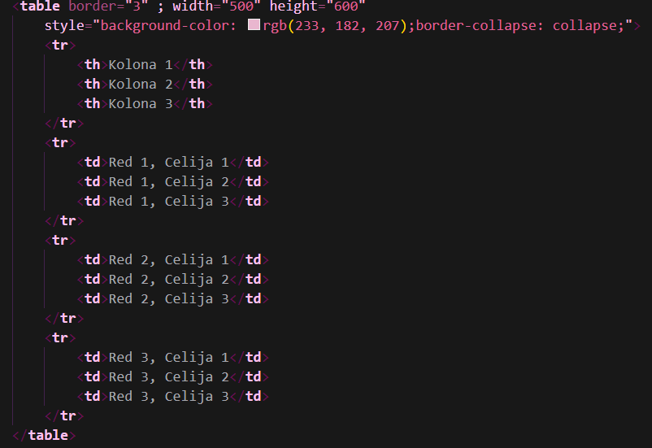

*Kao što već znamo, linijski CSS predstavlja samo stilski dodatak HTML jeziku. To nam govori da je sintaksa za tabelu nepromijenjena u odnosu na HTML. Jedino što se mijenja jeste kako mi tu tabelu stilizujemo.
*Prvo ćemo se podsjetiti sintakse za ubacivanje klasične 2x2 tabele u našu stranicu.
*Sada (stavku po stavku) da se podsjetimo šta koji od ovih tagova označava:
*Ta naša tabela bi izgledala ovako:
| nesto nesto nesto | nesto nesto nesto v2 |
| nista nista nista | nista nista nista v2 |
*Ovdje dolazimo do dijela gdje nam linijski CSS pomaže. Kao što sam već napomenula, njegov zadatak je da stilizuje našu tabelu. Dakle, navešćemo tagove za stil:
*Naravno radi lakšeg shvatanja, vidjećemo kako to sve u praksi izgleda (čitajte kao:"ovako tabela sa svim tim treba da izgleda")
| Kolona 1 | Kolona 2 | Kolona 3 |
|---|---|---|
| Red 1, Celija 1 | Red 1, Celija 2 | Red 1, Celija 3 |
| Red 2, Celija 1 | Red 2, Celija 2 | Red 2, Celija 3 |
| Red 3, Celija 1 | Red 3, Celija 2 | Red 3, Celija 3 |
* A ovako to izgleda u našem kodu:
